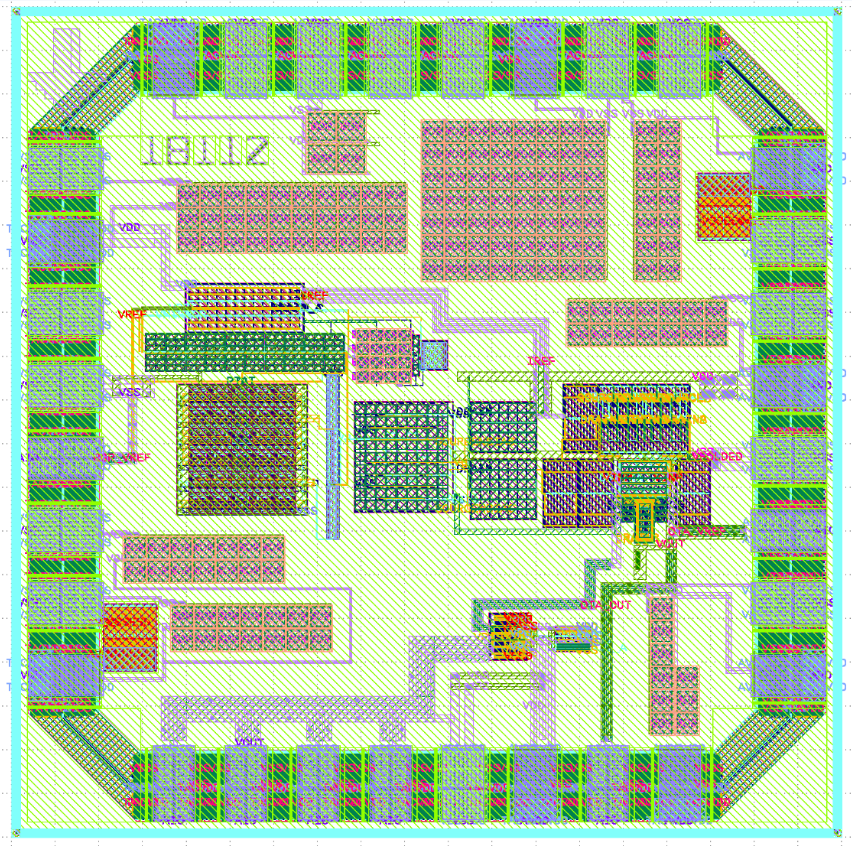
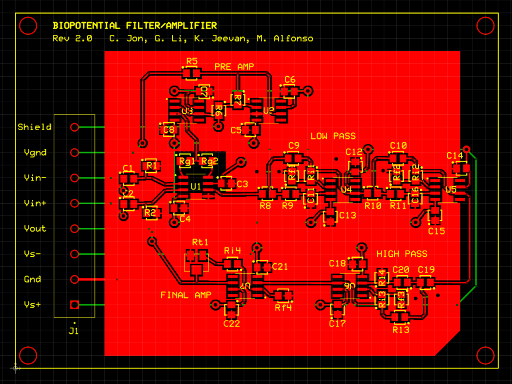

Li Gong
Electrical Engineering Master's student at Stanford University specializing in analog integrated circuits, mixed-signal systems, and hardware development.
Electrical Engineering Master's student at Stanford University specializing in analog integrated circuits, mixed-signal systems, and hardware development.

I am a first-year Master's student in Electrical Engineering at Stanford University focusing on analog circuit design and signal processing. My work combines integrated circuit design, biomedical instrumentation, and hardware prototyping. I enjoy designing systems from transistor-level circuits to complete hardware platforms.

Designed a CMOS 180nm low-dropout regulator from schematic to layout using Cadence Virtuoso. Implemented:
Tools: Cadence Virtuoso, Spectre, Calibre, HSpice

Designed a portable auditory evoked potential measurement device for marine mammal hearing studies. Responsibilities included:
Presented at IEEE EMBC.

Studied sequence detection properties of dendritic computation models. Investigated whether NMDA/KIR based dendritic mechanisms maintain sequence recognition across different firing regimes including single spikes and burst activity.

CMOS circuits, OTA design, LDO regulators, bandgap references, mixed-signal systems
Cadence Virtuoso, Spectre, HSpice, Calibre DRC/LVS/PEX
Python, MATLAB, NumPy, simulation automation
PCB design, soldering, embedded systems, sensors
My work focuses on analog circuit design, integrated circuits, biomedical instrumentation, and hardware development. I enjoy building systems from transistor-level circuits to complete measurement platforms.
Analog IC design, biomedical hardware, and intelligent systems.
Designed a CMOS 180nm low-dropout regulator from schematic to layout using Cadence Virtuoso. The project involved transistor-level analog design, simulation, stability analysis, and physical verification.
Tools: Cadence Virtuoso, Spectre, Calibre, HSpice

Designed a portable biopotential filter/amplifier system for measuring auditory evoked potentials (AEPs) in marine mammals. The project focused on low-noise analog signal acquisition and practical hardware implementation.
Presented at IEEE Engineering in Medicine and Biology Conference (EMBC).

CMOS circuits, OTA design, LDO regulators, bandgap references, mixed-signal systems
Cadence Virtuoso, Spectre, HSpice, Calibre DRC/LVS/PEX
Python, MATLAB, NumPy, simulation automation
PCB design, soldering, sensor systems, debugging